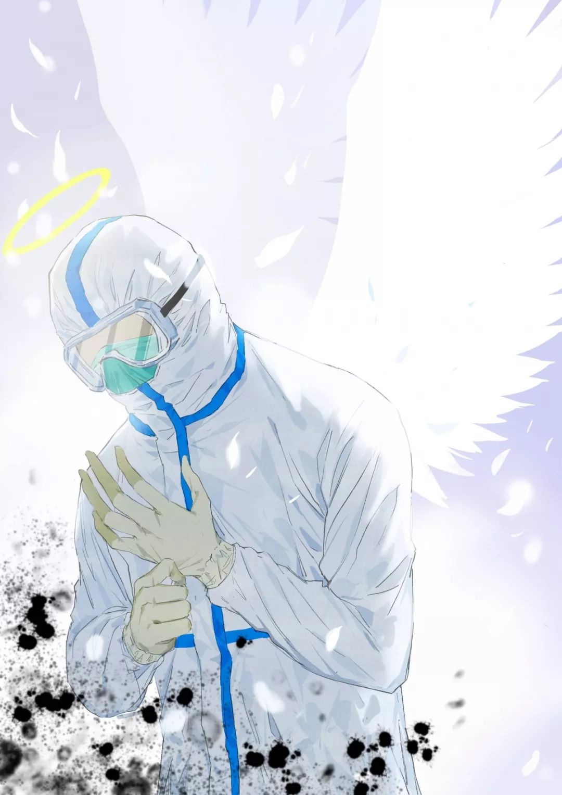
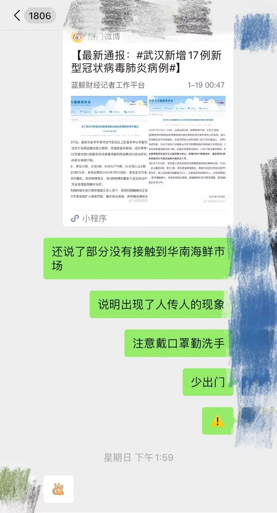
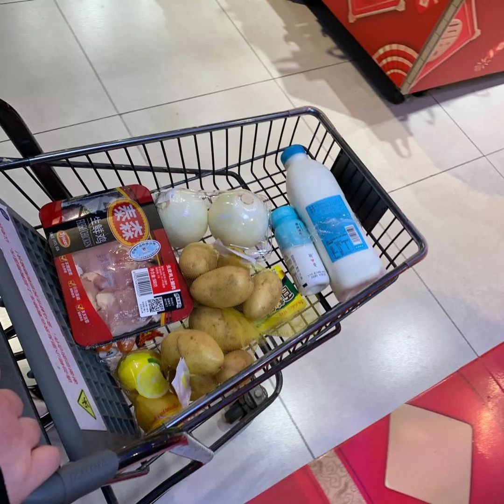
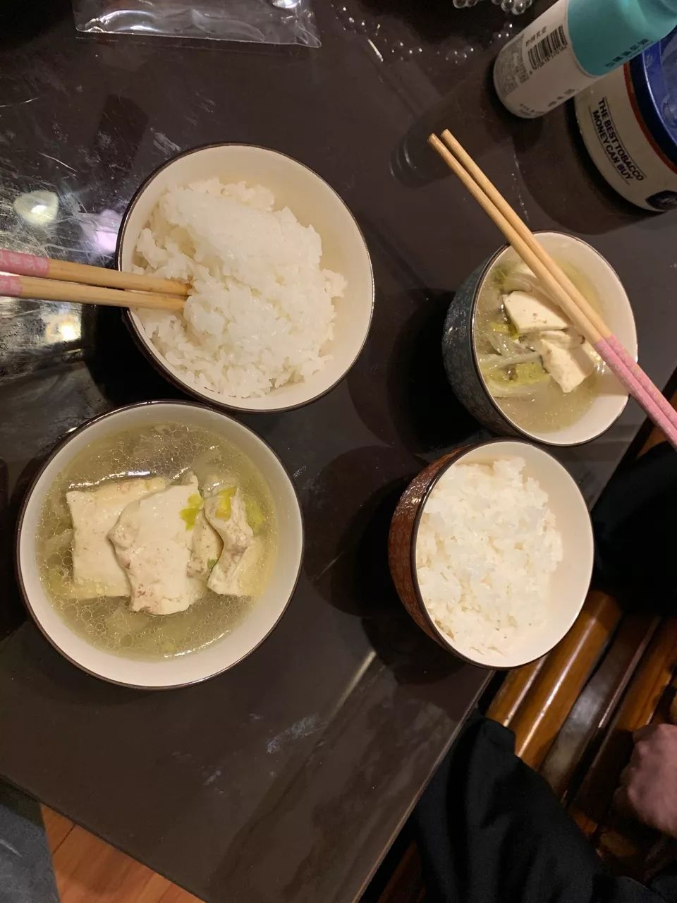
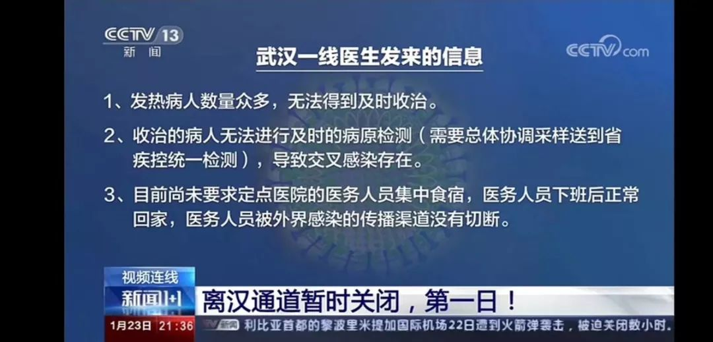
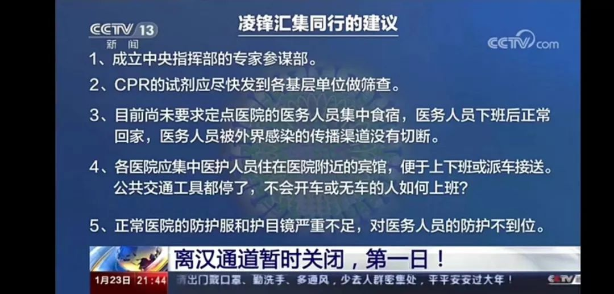

50位武汉人，亲笔写下他们“封城”第一天的生活 | 三明治持续更新中
原文链接 备份链接 昨天是武汉封城第一天，三明治紧急发起了每日书特别版《武汉日常》，邀请人在武汉和家乡在武汉的朋友，一起来用文字忠实记录他们在这个特殊时期的生活日常。 招募一经发出，就有近百位朋友迅速响应，其中有一路哭着坚持回家过年的北 …
本文由娱志The Review原创出品
华东师范大学传播学院学生娱评号
转载需申请授权
作者 | Moe，苏博
编辑 | 华实
导语
“自2020年1月23日10时起，全市城市公交、地铁、轮渡、长途客运暂停运营；无特殊原因，市民不要离开武汉，机场，火车站离汉通道暂时关闭。恢复时间另行通知。恳请广大市民，旅客理解支持！”这是来自武汉市新型冠状病毒感染的肺炎疫情防控指挥部的通知。武汉封城，猝不及防，外界一片哗然。在拥有一千万人口的武汉城内，每个普通老百姓，每个普通家庭在被封城的两天内，焦急、彷徨、无助还是绝望？无人得知。知道的，都是武汉人连夜飞往多伦多，驾车去岳阳，甚至上海。
今日正值大年三十，娱志打破常规，特别与武汉城内的两位同学，一位华东师大本科生Moe，一位苏州大学研究生苏博，取得联系，让他们用最浅显最素朴的语言，描述这短短一天内，他们普通生活的变化，对疫情信息的了解，对防疫措施的直观感受，更重要的是，对武汉这座城市的爱。

Moe
感觉自己就像是当代的生化战士
—————————————
“武汉封城”的消息是半夜两点钟出的，看完当时整个人直接崩溃了。我是土生土长的武汉人，家里几乎所有的亲戚都在武汉。虽然之前看到类似的消息“武汉人不出去，外面人不进来”，但真的没想到会突然封城。我最直观的感受就是害怕、恐惧和无助，真的很担心家里每个亲人以及朋友们的状况，我们留在武汉的人该怎么办？这个疫情的真实情况到底有多严重？我一无所知，感觉像是经历了一次真实版的“浣熊市”。
第二天一早醒来，我妈就带着我一起到超市里面去囤货，购买必需的生活用品、药品和物资。我们两个人在出门之前，都戴上了两层医用口罩，这还是大前天，跑了七家药店，托熟人，最后才抢着买到的。事实上，专家所建议的N95口罩在这儿炒到了35元一只。如果要用一个月的话，口罩的费用就高达一千多，甚至我们根本还买不到。而淘宝20号下单的口罩现在仍还没发货，快递也停运了，不知道什么时候能收到。我和妈妈还戴上了普通的框架眼镜，害怕会有飞沫溅到眼睛里面去（实际上护目镜在武汉也买不到了），手上也戴着手套，避免和任何可能的感染物有接触，出门照了照镜子，感觉自己就像是当代的生化战士。

我家在武昌区，距离疫情最严重的汉口的江岸区和江汉区还有很长的一段距离。隔着江，但身边的人包括我自己依旧处于提心吊胆的状态，谁也无法保证自己就是绝对安全的。距离我们家最近的大型超市是中百仓储，大概需要步行二十分钟。公共交通全部暂停运营了，没有地铁也没有公交，唯一的出行方式只能步行或开车。我曾尝试着在家里面用滴滴约车，上面显示等待时间最少为一个小时，可能这还是理想的状态了，很多司机已经不愿意接单了。
从家到超市，二十分钟的路程，我们一路快步走着。街边的小商铺已经基本关门了，没看见几个路人和车辆驶过，就像是鬼城一样，空荡荡的，没人说话，也没有车辆的声音，整个氛围让你压抑得说不出话来。唯一能看到的零星几个路人，应该刚从超市里抢购回来，全部都戴着口罩，提着几大袋子的东西，行色匆匆地走去，一刻都不想停留。人人都隔着两三米远的距离，害怕身边走过的路人就是下一个潜在的感染者。路上，我碰到了院子里认识的同学。有点滑稽的是，我们各自站在街道的两边，戴着厚厚的口罩，互相大声喊话，说要注意安全，别出来晃了。这个场景我以前好像在恐怖片当中看到过。

到了超市，发现超市里许多人戴着口罩在那儿抢购，整体还是很有秩序的，都在排队。只是蔬菜青菜，冷冻食品和米，还有洗护用品都被抢没了，我和妈妈到的时候这些地方都空了，最后只能提着三根黄瓜、两个番茄和两筒面条回去了。其他的什么都没有了，洪山菜苔从原来的四五块钱涨到了三十多块，大白菜是到了十二块钱一斤，蔬菜价格整体上翻了几番。可能是武汉封城的第一天，一切都很突然，大家都很恐慌，都在疯狂地囤货，每个人都会差不多提前囤一周的食材，避免出门。在家呆着刷朋友圈，看到有同学发了江汉路和汉街的照片。这以前是武汉最热闹的两个地方，现在已经没什么人。父母在家里面，时刻提醒你：“不准出门，呆在家里”。这种气氛，让我每一次出门都格外紧张，生怕发生什么意外。家里面的年夜饭、拜年都取消了。自己住的院子里也成立了“预防武汉肺炎小组”，进行职工登记以及外出情况登记。微信群里不停轰炸着武汉肺炎的消息：医院的情况，高速公路封锁的情况，又有多少人确诊了，又有谁家的小区里面有人被隔离了。
妈妈告诉我，她同事的儿子因为有几日的咳嗽发烧，去到医院里却根本无法确诊，从早上九点一直排到晚上十二点多，最后只能回家自行隔离。或是哪个同学跟我说，协和医院又确诊了多少多少人，七医院的人数根本都无法治疗这么多病人了，排队的人数都太多了。又或是我自己在家里，听到外面救护车嘀嘀嘀急促的声音，心里一阵发慌，这些都是在身边真实发生的事情。后来有那么一段时间，我根本不想再去看微博，微信，看一次就会恐慌一次，难受一次，想哭，无助。在这种封城的情况下，神经也格外紧张，我不知道该去相信什么，相信谁了。大家能做的就是相互鼓励，然后保护好自己。

有时候，我会在想，如果我们在18号甚至在一月初就开始重视起来，现在是否会是截然不同的情况呢？第一次给爸妈发武汉肺炎的消息，还是十二月底刚刚出来的，叫他们要小心。可是，武汉还是以一片祥和的气氛跨年，该聚会的聚会的，该逛街的逛街，该吃饭的吃饭，谁都没有把这当回事。记得1月18号我回武汉站，整个车站基本上都没人戴口罩，除了我和我的同伴。所有人看我们都像看着异类，我感到诧异。那时候新闻上已经报道出有人在国外也感染上了同样的新型肺炎，疫情真的有控制的那么好吗？19号我坐地铁，发现地铁里面也并非所有人都戴上了口罩。当天吃饭的时候，家里的亲戚还安慰我让我不要担心，我只是过度紧张了，没人会感染，武汉也没出现人传人，我们也没去过华南海鲜市场。
在孤岛中的武汉，我们会好好保护好自己，把自己隔离，只是希望大家不要放弃我们，我生活了十九年的地方，这次也要陪你一起挺过，武汉加油。

苏博
姑姑把吃的放在门口，喊道“不要开，我走了”
——————————————————
11号我从苏州去珠海和澳门旅游，17号原本打算直接从广东飞重庆，从屡被提及的“疫情可防可控”、“有限人传人”中，我断定疫情并无大碍。于是我选择回到武汉与朋友叙旧，而刚到武汉，过后两天突变的局势告诉我，这一次武汉的疫情变得有些不可控了。我退掉了原本回重庆家中的车票，放弃归途。从重庆到武汉：303公里，大约4小时，这条路线来来往往很多次走遍。并不是不想回家，新年团聚的传统早已在我过去二十几年里理所当然，但为了家人安全、为了往后漫长岁月的团圆，我下定决心留下来，就在封城通知之前。
2019年跨年前一天，我在苏州，第一次知道武汉的新型肺炎。在和朋友的聊天中，我得知，虽然当天在地铁上准备跨年的人依旧很多，只是不少年轻人都戴上了口罩而已。感觉当时肺炎，只是水面的一颗石子，掉进水里泛起一阵涟漪就径直沉了下去。2020年元旦，武汉街上的年轻人又都不约而同地将自己口罩取下。钟南山院士1月21日发布的公告成了这次疫情的转折。而前一天，我还戴着防PM2.5的口罩，大剌剌地跟朋友们出去刷大排档，当时完全没有意识到问题的严重性。21日凌晨，我的朋友在微信群里提及，他爷爷因为出现发烧咳嗽的症状，被带去了医院诊断。而在医院人满为患的情况下他爷爷的病情迟迟不能得到确认。当时怕我朋友被感染，他父母要求他搬去他小姨家住，而我家和他家仅一路之隔，我便想邀请他来我家住，正好也可以和我作伴。

凌晨两点，朋友敲了我家的门，进门的一瞬间伴随着他止不住的泪水，这是我第一次看见他哭。他的父母为了保护他，防止疫情的波及，凌晨立于黑暗和寒冷中，静等他收拾行李，迟迟不敢上楼。短短的几层楼梯因为恐惧显得那么长，又因为爱变得那么近。当时的我束手无策，太过于短暂。仅仅一夜，曾经就在身边的朋友，原本该沉浸于新年到来欣喜中，却不得不停下来，面对这次从未有过、未知、可怖的疫情。
好在，21日至今，我和朋友呆在这暂时的“安全屋”内，一直没出门。因为我父母远在重庆，我在武汉的亲人仅剩下我姑妈一家和姨妈一家。邻居十分照顾我，给我送来了饺子和肉丸子这些带着新年味道的食物，每天都会上来看望一下我确保我的安全。冷冰冰的数据之下，所包涵的个体与个体之间的守望相助，成了那冰雪天里被划亮的火柴。我姑妈也冒着风险，送来了藕夹和卤牛肉，送来的时候只是放在门外，“恶狠狠”地强调我不许开门。曾是“您来了，新年好”，现在却化成了“不要开，我走了”。

在这3天“安全屋”的生活中，我时刻关注疫情发展的动态，同时也在恐慌中与谣言做着激烈的斗争。每次看到相关预防方法都会抱着“宁可信其有，不可信其无”的心态去转发给亲人朋友。谣言漫天飞的同时，我们也逃不掉地域黑的炮轰。“武汉人为了出城而吃退烧药”、“武汉一家医院新型肺炎病患出逃”此类带有造谣的黑子言论也频繁出现在微博话题上。
我的父母因要照顾远在重庆的外公外婆，早在11月中旬就回了重庆老家。在澳门旅游时，我爸就提醒我武汉疫情的严重性，给我打了多通电话叫我直接从广东飞回重庆，不要再回武汉了。我当时执意要回武汉，还埋怨了几句。直到现在，我爸还在为这事跟我生气。这次误判，是“信息”蒙蔽了我的双眼。23号原本这一天是家里人专门照顾我时间而定的年夜饭的时间，却因封城，我被锁定在武汉。23号凌晨，我身边就有不少朋友，从武汉开车回到了荆门，城外似乎比城内更安全。
亲人远在重庆，只能透过微信视频，和家人们一起吃着云端的年夜饭：一边是在酒店吃着标配团圆饭，一边是我和朋友就着白菜涮肥牛火锅。苦中作乐，算是过了一个团圆年了。


我想说，现今武汉已经在沉重的压力之下，我们的交通已经被封锁，但别用指责、谩骂、蔑视、嘲讽的话语封了我们的心。
我始终深爱武汉的一草一木，这座城市带给我太多记忆，成为今天的我不可缺失的一部分。希望那些彻日劳累的医护人员的付出能疫情突破的回报，全社会口罩、物资的捐献如一条条暖流正在汇入武汉，愿武汉能早日攻克疫情。相信四月，武汉的樱花依旧绚烂。


（指导老师：吴畅畅）
主编

执行主编

--END–
主编 | 华实
执行主编 | 拾贰
美术总编 | 四七、木羊
美编组 | 云起、果子、鲸落、海岛、层层

文章已于修改
原文链接 备份链接 昨天是武汉封城第一天，三明治紧急发起了每日书特别版《武汉日常》，邀请人在武汉和家乡在武汉的朋友，一起来用文字忠实记录他们在这个特殊时期的生活日常。 招募一经发出，就有近百位朋友迅速响应，其中有一路哭着坚持回家过年的北 …
原文链接 备份链接 2020年1月23日凌晨2点，武汉市宣布自10时起交通封城，尽管很多人还在睡梦之中，在8个小时的窗口时间内，仍有很多人选择连夜出城。更多的人，则留了下来，有的人别无选择，有的人则担心自己无论去哪里都是潜在的传播者。一位 …
原文链接 备份链接 1月23日清早起来时，看到武汉封城的消息。起床后跟正在做饭的母亲说了一声，母亲不是很能理解，也不大关注。这几天一直在她耳边念叨太多疫情的事情，我感觉她都有些消化不过来了。很快黄冈市区也封城了，到了下午我老家武穴也传出了 …
原文链接 备份链接 这注定是一个难捱的春节。 截至1月23日24时， 全国确诊新型肺炎病例830例， 死亡25例。 截至1月23日晚，中国新型肺炎疫情地图（来源：丁香医生） 同时，国际确诊案例也陆续出现。 截至1月23日，数据如下： 泰 …
原文链接 备份链接 文 | 王彦入 王丹妮 程静之 殷盛琳 李晓芳 周航 叶雯 曾宪雯 编辑 | 王珊 陶若谷 33岁的刘科戴上两层口罩独自走进地铁，夹杂在路人中间。像他这样拉着行李箱的人并不少见，彼此间默契地保持着距离。三天前，他刚刚从 …